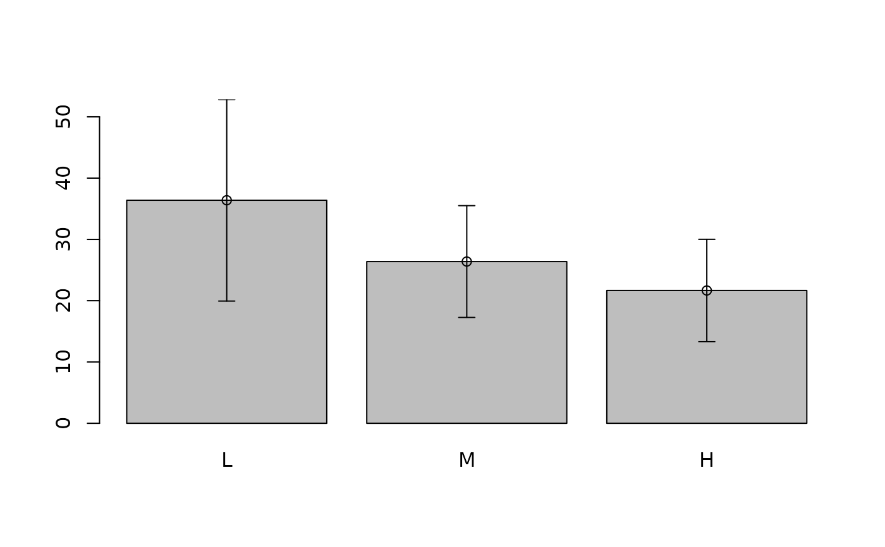
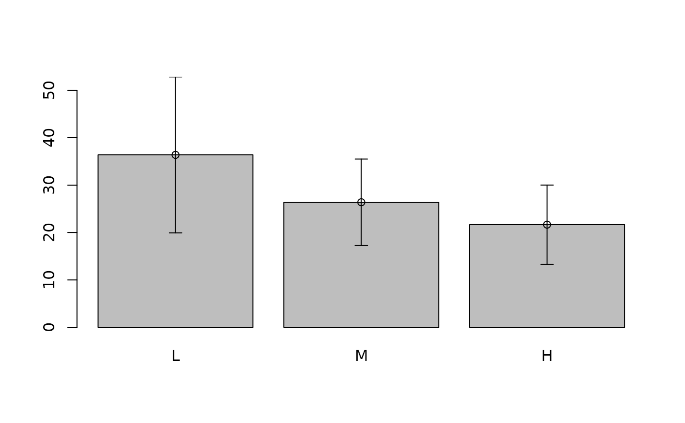

Plot confidence intervals/error bars
plotCI.RdGiven a set of x and y values and upper and lower bounds, this function plots the points with error bars.
Arguments
- x
The x coordinates of points in the plot
- y
The y coordinates of points in the plot
- uiw
The width of the upper portion of the confidence region, or (if liw is missing) the width of both halves of the confidence region
- liw
The width of the lower portion of the confidence region (if missing, the function assumes symmetric confidence bounds)
- ui
The absolute upper limit of the confidence region
- li
The absolute lower limit of the confidence region
- err
The direction of error bars: "x" for horizontal, "y" for vertical ("xy" would be nice but is not implemented yet; don't know quite how everything would be specified. See examples for composing a plot with simultaneous horizontal and vertical error bars)
- gap
Size of gap in error bars around points (default 0;gap=TRUE gives gap size of 0.01)
- sfrac
Scaling factor for the size of the "serifs" (end bars) on the confidence bars, in x-axis units
- add
If FALSE (default), create a new plot; if TRUE, add error bars to an existing plot.
- slty
Line type of error bars
- scol
Color of error bars: if col is specified in the optional arguments, scol is set the same; otherwise it's set to par(col)
- pt.bg
Background color of points (use pch=21, pt.bg=par("bg") to get open points superimposed on error bars)
- ...
Any other parameters to be passed through to plot.default, points, arrows, etc. (e.g. lwd, col, pch, axes, xlim, ylim). xlim and ylim are set by default to include all of the data points and error bars. xlab and ylab are set to the names of x and y. If pch==NA, no points are drawn (e.g. leaving room for text labels instead)
Author
Ben Bolker (documentation and tweaking of a function provided by Bill Venables, additional feature ideas from Gregory Warnes)
Examples
y<-runif(10)
err<-runif(10)
plotCI(1:10,y,err,main="Basic plotCI")
plotCI(1:10,y,err,2*err,lwd=2,col="red",scol="blue",
main="Add colors to the points and error bars")
 err.x<-runif(10)
err.y<-runif(10)
plotCI(1:10,y,err.y,pt.bg=par("bg"),pch=21,xlim=c(0,11),
main="plotCI with extra space on the x axis")
plotCI(1:10,y,err.x,pt.bg=par("bg"),pch=21,err="x",add=TRUE)
mtext("for adding horizontal error bars",3,0.5)
err.x<-runif(10)
err.y<-runif(10)
plotCI(1:10,y,err.y,pt.bg=par("bg"),pch=21,xlim=c(0,11),
main="plotCI with extra space on the x axis")
plotCI(1:10,y,err.x,pt.bg=par("bg"),pch=21,err="x",add=TRUE)
mtext("for adding horizontal error bars",3,0.5)
 data(warpbreaks)
attach(warpbreaks)
wmeans<-by(breaks,tension,mean)
wsd<-by(breaks,tension,sd)
## note that barplot() returns the midpoints of the bars, which plotCI
## uses as x-coordinates
plotCI(barplot(wmeans,col="gray",ylim=c(0,max(wmeans+wsd))),wmeans,wsd,add=TRUE)

## using labels instead of points
labs<-sample(LETTERS,replace=TRUE,size=10)
plotCI(1:10,y,err,pch=NA,gap=0.02,main="plotCI with labels at points")
text(1:10,y,labs)
data(warpbreaks)
attach(warpbreaks)
wmeans<-by(breaks,tension,mean)
wsd<-by(breaks,tension,sd)
## note that barplot() returns the midpoints of the bars, which plotCI
## uses as x-coordinates
plotCI(barplot(wmeans,col="gray",ylim=c(0,max(wmeans+wsd))),wmeans,wsd,add=TRUE)

## using labels instead of points
labs<-sample(LETTERS,replace=TRUE,size=10)
plotCI(1:10,y,err,pch=NA,gap=0.02,main="plotCI with labels at points")
text(1:10,y,labs)